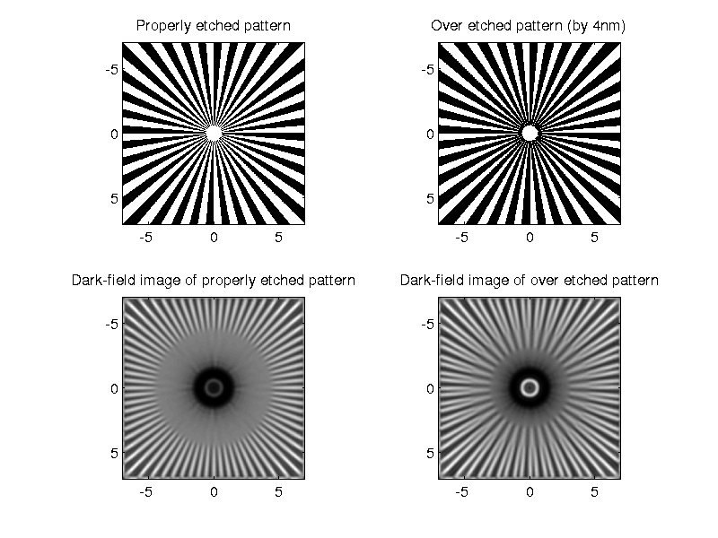
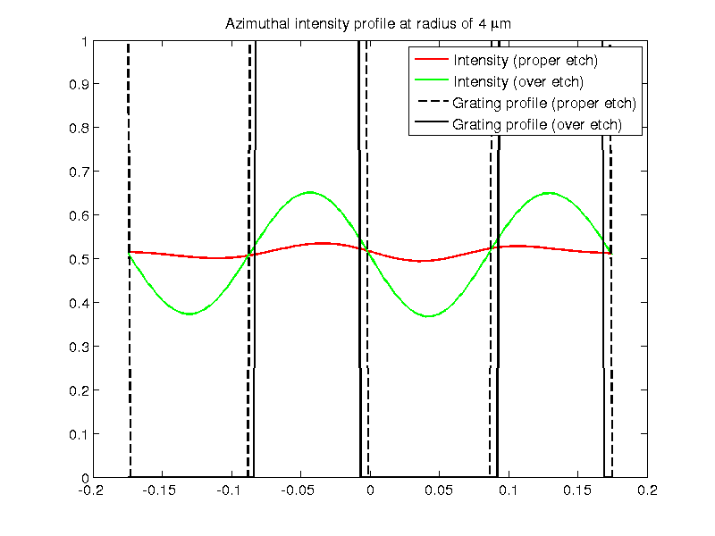

Contents
Image of MBL/NNF Siemens target under dark-field.
This script simulates image of the Siemens test object from the MBL-NNF phase target. We simulate a small region 7umx7um near the center so that the computation can be carried out in reasonable time. Notice the edge artifacts around the edge.
clear all;
Set parameters of the target.
% Following numbers are from Fig 8.2 of the book chapter on MBL/NNF % target. Rout=75/2;% Outer radius of siemens star. Rin=0.6; %Inner radius of siemens star. RISiO2=1.46; ThickSiO2=0.09; PixSize=6.5/100; wavelength=0.546; simRadius=7; % radius of simulated region.
Compute specimen transmission.
xsim=-simRadius:0.02:simRadius; %2nm sampling is required to properly sample slight over or under-etching of the target usim=0; %usim=-1:0.2:1; % To simulate defocus. % Assume that the azimuthal wedges are perfectly etched providing exact % square wave. ProperEtchProfile=mblnnfSiemens(xsim,xsim,0); oplProperEtch=(2*pi/wavelength)*(1.33-RISiO2)*ProperEtchProfile*ThickSiO2; specimenProperEtch=exp(1i*oplProperEtch); % Assume slight overetching and therefore non-square azimuthal phase % grating. OverEtchProfile=mblnnfSiemens(xsim,xsim,0.04); oplOverEtch=(2*pi/wavelength)*(1.33-RISiO2)*OverEtchProfile*ThickSiO2; specimenOverEtch=exp(1i*oplOverEtch);
Parameters of dark-field microscope.
Parameters correspond to the experimental image that we use in the paper.
DFparams.NAo=1; DFparams.wavelength=wavelength; DFparams.annulus=[1.1 1.2]; DFparams.nImm=1.515; DFparams.nEmbb=1.33; DFsys=microlith(xsim,usim); DFsys.computesys('Darkfield',DFparams); DFImageOverEtch=DFsys.computeimage(specimenOverEtch,'CPU'); DFImageProperEtch=DFsys.computeimage(specimenProperEtch,'CPU');
Images and azimuthal profiles at distance of 4um.
Dark regions are etched and white regions are intact silica.
rProfile=4; thetaProfileSim=linspace(-pi/18,pi/18,251); [xxsim, yysim]=meshgrid(xsim); % Generate spatial grid for resampling along azimuth. AngularProfileProper=interp2(xxsim,yysim,gray2norm(DFImageProperEtch),... rProfile*cos(thetaProfileSim),rProfile*sin(thetaProfileSim)); AngularProfileOver=interp2(xxsim,yysim,gray2norm(DFImageOverEtch),... rProfile*cos(thetaProfileSim),rProfile*sin(thetaProfileSim)); AngularProfileProperEtch=interp2(xxsim,yysim,~ProperEtchProfile,... rProfile*cos(thetaProfileSim),rProfile*sin(thetaProfileSim),'nearest'); AngularProfileOverEtch=interp2(xxsim,yysim,~OverEtchProfile,... rProfile*cos(thetaProfileSim),rProfile*sin(thetaProfileSim),'nearest'); figure(1); clf; set(1,'color','white','Position',[100 100 800 600],'defaultaxesfontsize',14); colormap gray; ha=imagecat(xsim,xsim,~ProperEtchProfile,~OverEtchProfile,DFImageProperEtch,DFImageOverEtch,'equal','link'); % All four images are linked, so zooming or panning one will do the same on % all others. axes(ha(1)); title('Properly etched pattern'); axes(ha(2)); title('Over etched pattern (by 4nm)'); axes(ha(3)); title('Dark-field image of properly etched pattern'); axes(ha(4)); title('Dark-field image of over etched pattern'); figure(2); clf; set(2,'color','white','Position',[100 100 800 600],'defaultaxesfontsize',14); plot(thetaProfileSim,AngularProfileProper,'r',... thetaProfileSim,AngularProfileOver,'g',... thetaProfileSim,AngularProfileProperEtch,'k--',... thetaProfileSim,AngularProfileOverEtch,'k','LineWidth',2); legend('Intensity (proper etch)','Intensity (over etch)','Grating profile (proper etch)','Grating profile (over etch)'); title('Azimuthal intensity profile at radius of 4 \mum'); 